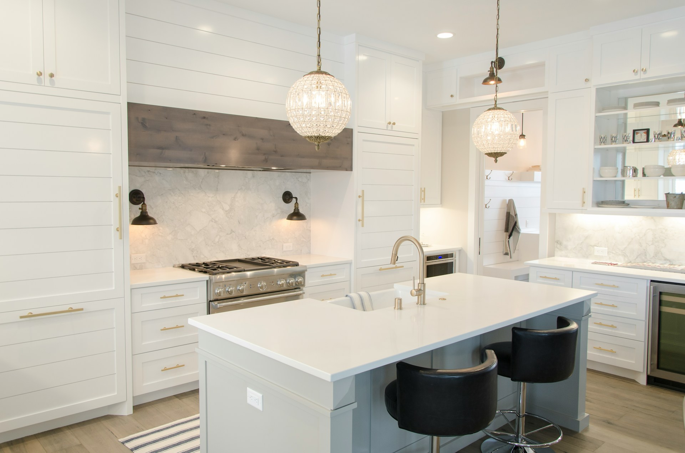
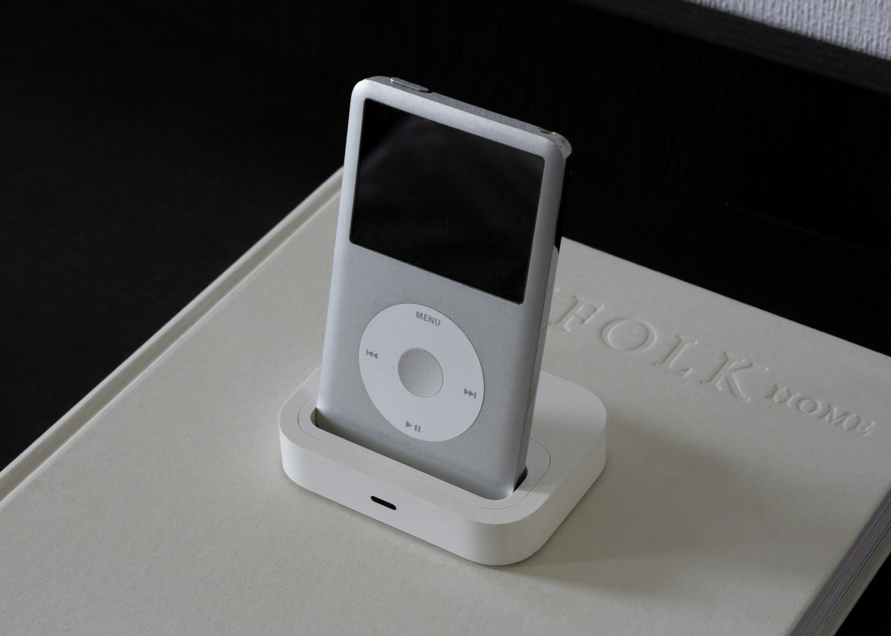

브랜드의 기준을 세우는
웹사이트 구축 파트너
기업의 첫인상부터 고객 문의까지, 목적에 맞는 정보 구조와 디지털 경험을 설계합니다.
웹사이트는 회사를 소개하는 화면을 넘어, 고객이 브랜드를 판단하는 첫 번째 기준입니다.
필요한 정보가 자연스럽게 읽히고,
문의로 이어지는 흐름을 설계합니다.

첫 화면에서 전달되는 명확한 인상
방문자가 처음 마주하는 화면에서 브랜드의 방향과 핵심 메시지를 분명하게 전달합니다.

목적에 맞게 확장되는 섹션 구조
기업, 브랜드, 병원, 전문 서비스 등 업종별로 필요한 콘텐츠를 유연하게 구성합니다.

문의까지 이어지는 사용자 동선
소개와 강점, 사례, FAQ, 문의 영역을 자연스럽게 연결해 다음 행동을 쉽게 만듭니다.

운영과 확장을 고려한 구축 방식
콘텐츠 수정과 페이지 추가, 기능 확장까지 고려해 지속적으로 활용할 수 있는 구조를 만듭니다.
쌓아온 경험을 프로젝트의 기준으로
0
+
누적 프로젝트
0
+
파트너 기업
0
%
고객 만족도
0
년
평균 실무 경력
프로젝트를 함께한 고객의 이야기
복잡했던 사업 내용이 한눈에 정리됐습니다.
여러 자료에 흩어져 있던 회사 소개와 사업 영역을 방문자 관점에서 다시 정리해주었습니다. 고객에게 우리 회사를 설명하기가 훨씬 쉬워졌습니다.
회사 규모와 전문성이 제대로 전달됩니다.
기존 홈페이지는 오래된 정보가 많고 사업의 강점이 잘 보이지 않았습니다. 주요 실적과 기술력을 중심으로 개편한 뒤 기업 이미지가 한층 정돈됐습니다.
내부에서도 활용하기 좋은 홈페이지가 됐습니다.
고객 안내뿐 아니라 영업 미팅과 제안 과정에서도 홈페이지를 적극적으로 활용하고 있습니다. 필요한 정보를 빠르게 보여줄 수 있어 실무 만족도가 높습니다.
막연했던 요구사항을 명확하게 정리해주었습니다.
처음에는 원하는 분위기만 설명했는데 필요한 페이지와 콘텐츠를 단계적으로 정리해주었습니다. 진행 과정이 명확해 의사결정이 편했습니다.
페이지가 많아도 일관된 인상이 유지됩니다.
사업 분야가 다양해 페이지 구성이 복잡했지만 동일한 디자인 기준으로 정돈됐습니다. 새로운 사업 페이지를 추가할 때도 확장하기 편한 구조입니다.
브랜드의 분위기가 이전보다 분명해졌습니다.
제품 이미지만 나열했던 기존 사이트와 달리 브랜드의 철학과 메시지가 자연스럽게 전달됩니다. 고객에게 보여주고 싶었던 인상을 제대로 구현했습니다.
감성과 정보의 균형이 좋았습니다.
시각적인 분위기는 유지하면서도 제품과 서비스 정보가 쉽게 읽히도록 구성됐습니다. 디자인에 치우치지 않고 실제 사용성을 함께 고려한 점이 좋았습니다.
브랜드 소개부터 구매 연결까지 자연스럽습니다.
브랜드 스토리와 제품 라인업, 외부 쇼핑몰 링크가 하나의 흐름으로 이어집니다. 방문자가 어디로 이동해야 하는지 명확해졌습니다.
콘텐츠가 바뀌어도 디자인이 쉽게 무너지지 않습니다.
사진과 원고를 교체해도 전체적인 스타일이 유지되도록 구성돼 있습니다. 시즌별 콘텐츠를 운영하기에도 부담이 적습니다.
작은 브랜드도 전문적으로 보일 수 있었습니다.
규모가 크지 않아 보여줄 자료가 부족했지만 핵심 제품과 강점을 중심으로 밀도 있게 구성해주었습니다. 브랜드에 대한 신뢰감이 높아졌습니다.
환자가 궁금해하는 정보가 먼저 보입니다.
진료과목, 의료진, 진료시간과 예약 방법을 쉽게 찾을 수 있도록 정리됐습니다. 병원 입장보다 환자의 탐색 흐름을 고려한 구성이 만족스럽습니다.
과한 광고 느낌 없이 신뢰감을 전달합니다.
화려한 표현보다 의료진과 진료 과정, 공간 정보를 차분하게 보여줍니다. 병원이 추구하는 전문적인 분위기와 잘 맞았습니다.
상담과 예약으로 이동하는 과정이 편리해졌습니다.
모바일에서 전화, 상담, 예약 버튼을 쉽게 찾을 수 있어 문의 과정이 단순해졌습니다. 필요한 정보와 행동 버튼의 위치가 명확합니다.
의료진과 진료 일정 관리가 편해졌습니다.
관리자에서 의료진 정보와 진료시간을 직접 수정할 수 있어 변경사항을 빠르게 반영하고 있습니다. 운영 측면에서도 실용적인 홈페이지입니다.
전문 서비스의 내용을 쉽게 전달할 수 있게 됐습니다.
고객이 어려워하던 서비스 내용을 질문과 답변 중심으로 정리해주었습니다. 상담 전에 기본 내용을 이해하고 문의하는 고객이 늘었습니다.
상품을 찾고 비교하는 과정이 훨씬 간결해졌습니다.
카테고리와 상품 정보를 다시 정리해 고객이 원하는 제품에 빠르게 도달할 수 있습니다. 모바일에서도 탐색이 편리하게 개선됐습니다.
사용자 화면과 관리자 화면을 함께 고려했습니다.
고객이 사용하는 화면뿐 아니라 내부에서 콘텐츠를 등록하고 관리하는 과정까지 설계됐습니다. 반복적인 운영 업무가 이전보다 단순해졌습니다.
필요한 기능을 단계적으로 확장할 수 있습니다.
초기에는 핵심 기능으로 시작하고 이후 회원, 예약, 게시판 기능을 추가할 수 있도록 구성했습니다. 예산과 일정에 맞춰 진행할 수 있어 좋았습니다.
수업과 상담 정보가 보기 쉽게 정리됐습니다.
프로그램이 많아 설명이 복잡했는데 대상별 과정과 상담 절차가 명확하게 구분됐습니다. 학부모와 수강생 문의에도 활용하기 편합니다.
오픈 이후에도 직접 운영할 수 있어 편합니다.
공지사항과 이미지, 주요 원고를 관리자에서 수정할 수 있습니다. 간단한 변경을 외부에 요청하지 않아도 돼 운영 부담이 줄었습니다.
자주 묻는 질문
어떤 업종의 홈페이지를 제작할 수 있나요?
기업 홈페이지, 브랜드 사이트, 병원·클리닉, 전문 서비스업, 커머스와 플랫폼 등 다양한 유형의 웹사이트를 제작합니다. 업종보다 사이트의 목적과 필요한 기능을 먼저 확인합니다.
템플릿을 사용해도 브랜드에 맞게 바꿀 수 있나요?
가능합니다. 기본 구조를 활용하되 컬러, 타이포, 이미지, 원고와 섹션 순서를 조정해 각 기업의 분위기와 목적에 맞게 구성합니다.
기획이나 원고가 없어도 진행할 수 있나요?
보유한 회사 자료와 상담 내용을 바탕으로 메뉴 구조, 페이지별 핵심 내용과 기본 원고를 함께 정리할 수 있습니다.
제작 기간은 얼마나 걸리나요?
페이지 수와 기능 범위에 따라 달라지며, 일반적인 기업 홈페이지는 자료 확인 후 상세 일정과 단계별 진행 계획을 안내합니다.
도메인과 호스팅도 함께 지원하나요?
도메인 연결과 호스팅 설정을 지원하며, 기존에 사용 중인 계정이 있다면 현재 환경을 확인한 후 이전 또는 연동 방식으로 진행합니다.